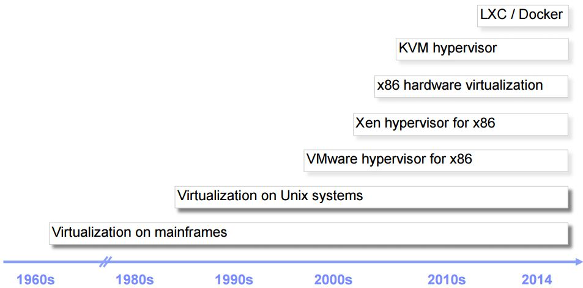
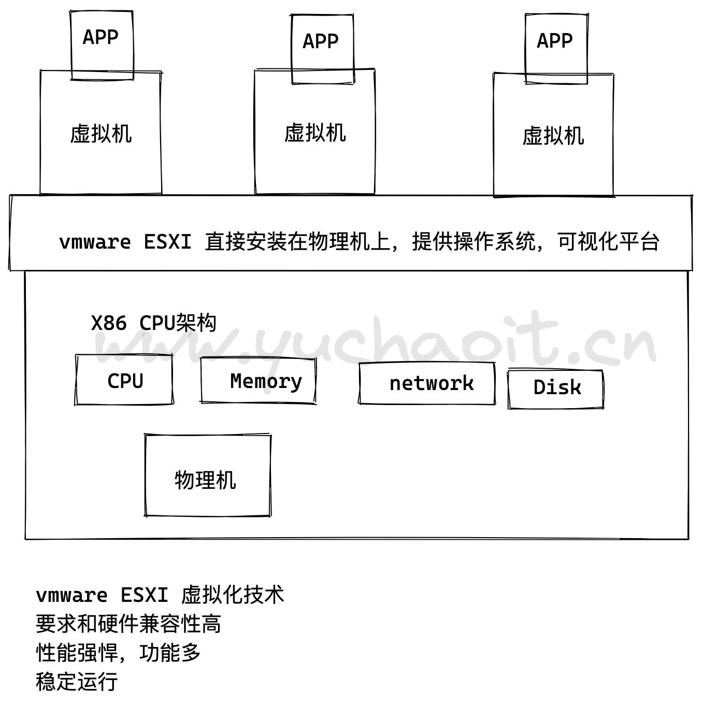
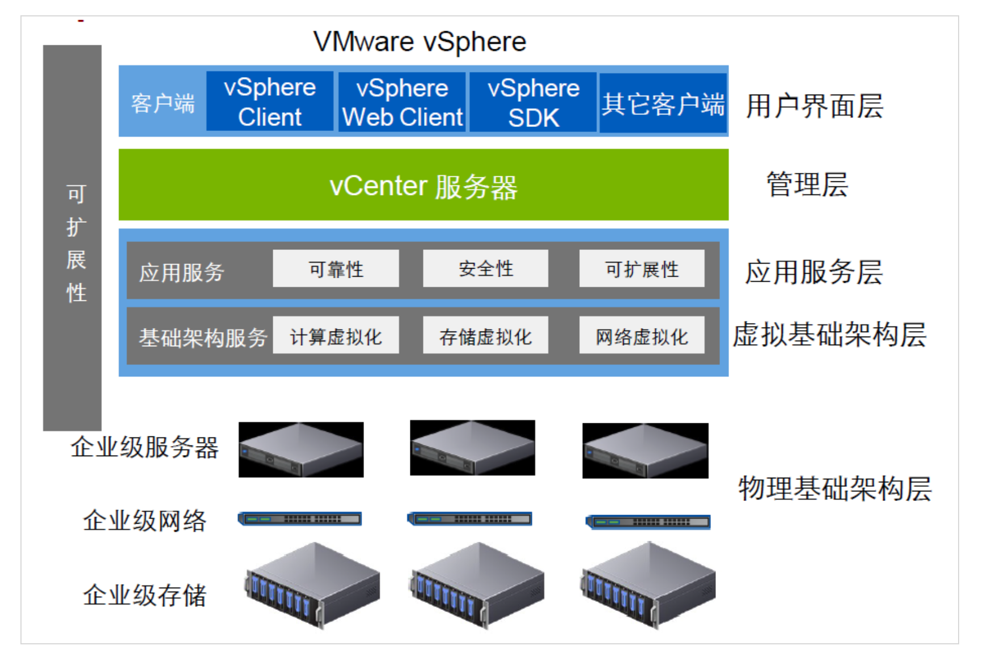
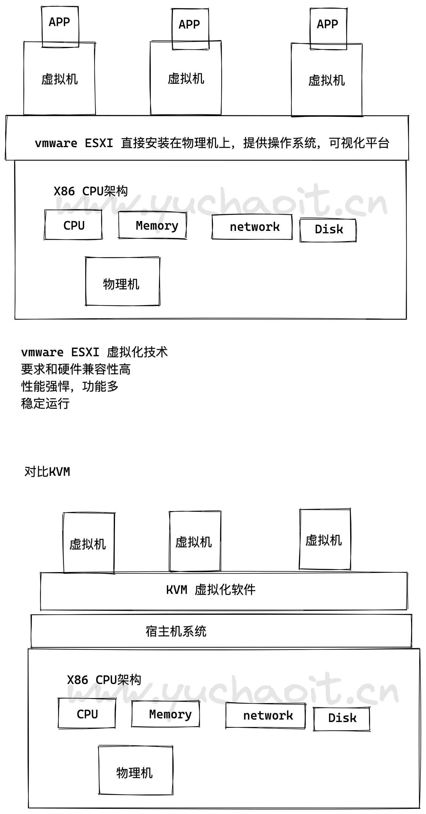
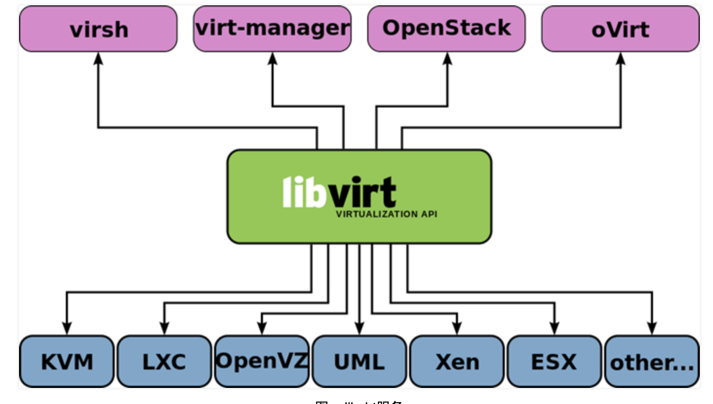
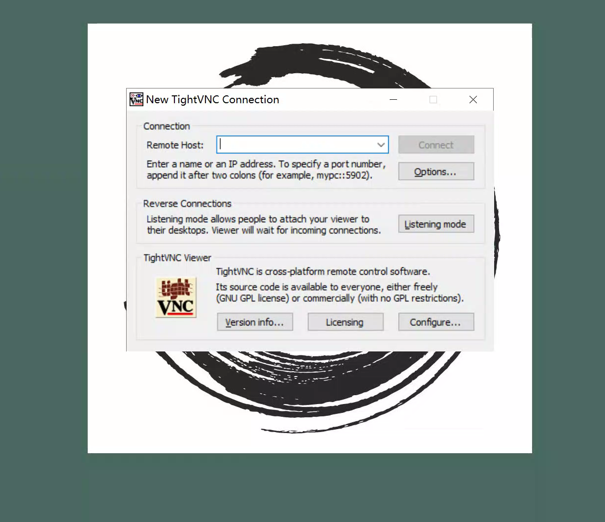
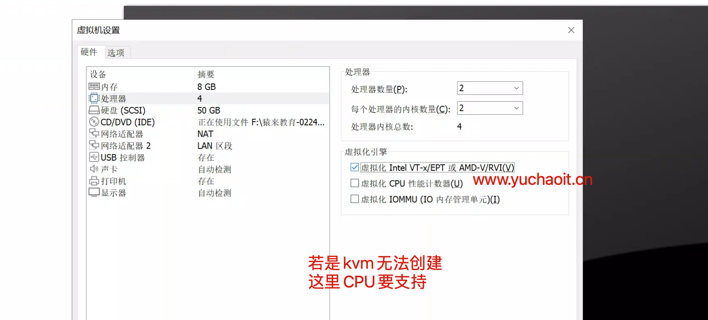
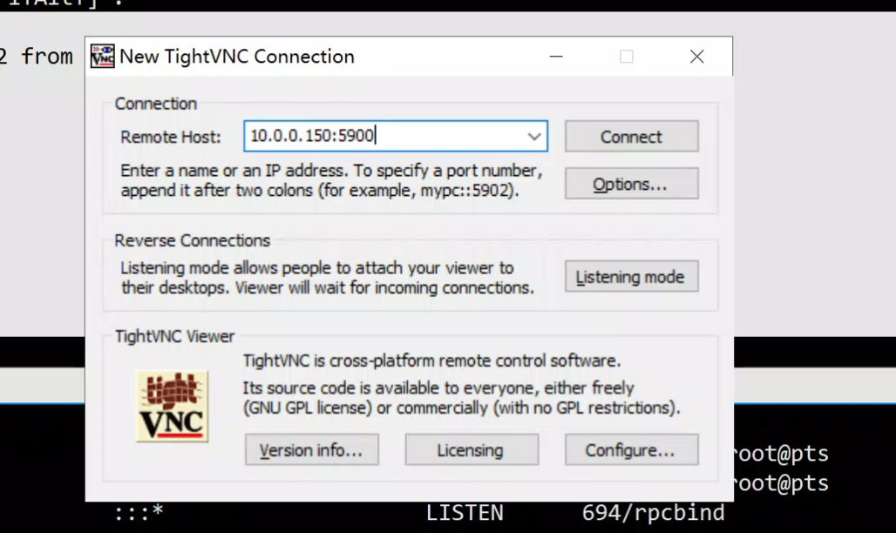
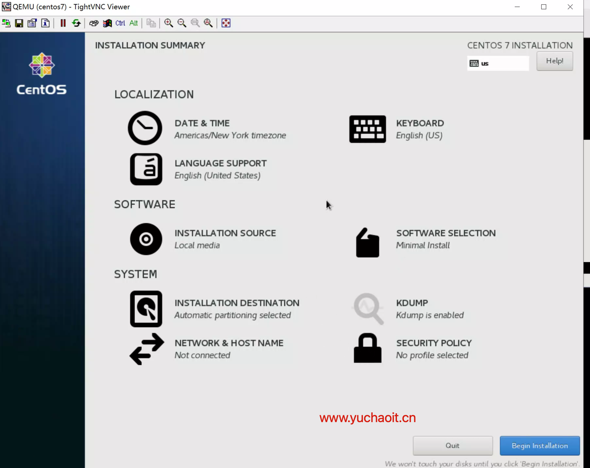
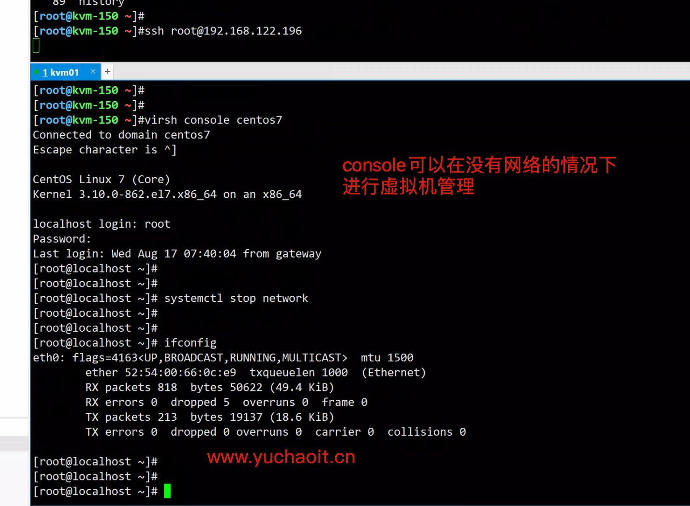

虚拟化KVM
0.虚拟化历史
其中，KVM 全称是 基于内核的虚拟机（Kernel-based Virtual Machine），它是Linux 的一个内核模块，该内核模块使得 Linux 变成了一个 Hypervisor：
- 它由 Quramnet 开发，该公司于 2008年被 Red Hat 收购。
- 它支持 x86 (32 and 64 位), s390, Powerpc 等 CPU。
- 它从 Linux 2.6.20 起就作为一模块被包含在 Linux 内核中。
- 它需要支持虚拟化扩展的 CPU。
- 它是完全开源的。官网。
本文介绍的是基于 X86 CPU 的 KVM。

1.什么是虚拟化？
虚拟化是一种资源管理技术, 是将计算机的各种物理资源, 如服务器、网络、内存及存储等，予以抽象、转换后呈现出来，打破物理设备结构间的不可切割的障碍，使用户可以比原本的架构更好的方式来应用这些资源。
这些资源的虚拟部分是不受现有资源的架构方式、地域或物理设备所限制。
虚拟化创建了一层隔离层，把硬件和上层应用分离开来，允许在一个硬件资源上运行多个逻辑应用。
虚拟化有：服务器虚拟化、应用程序虚拟化、展现层虚拟化、桌面虚拟化。
通过模拟物理服务器的硬件，实现在一台物理机上可以同时运行多个操作系统，也称为虚拟机 - 虚拟机共享物理服务器的 CPU，内存，IO 等硬件资源
- 虚拟机之间逻辑上是互相隔离的
- 物理机我们一般称为宿主机
- 宿主机上的虚拟机成为客户机
常见的虚拟化
- 内存虚拟化
- 磁盘虚拟化
- 网络虚拟化
VMware实现的是x86服务器的虚拟化，更确切地说，包含以下三个方面
- 计算能力：CPU/Memory的虚拟化
- 存储：VMFS文件系统
- 网络：虚拟交换机

为什么要用虚拟机
物理架构存在的问题：
- 难以复制和移动
- 受制于一定的硬件组件
- 生命周期短
- 物理服务器的资源利用率低
服务器虚拟化
- 将一台物理服务器虚拟成多台虚拟服务器。虚拟服务器由一系列的文件组成
虚拟机与物理机相比
最大化利用物理机的资源，节省能耗
更方便地获取计算资源
硬件无关。虚机都是文件，方便迁移、保护
生命周期更长，不会随着硬件变化而变化
根据需求的变化，非常容易更改资源的分配
更多高级功能
在线的数据、虚拟机迁移
高可用
自动资源调配
云计算
减少整体拥有成本，包括管理、维护等

关于使用虚拟化的优势
1.降低运营成本
服务器虚拟化降低了IT基础设施的运营成本，令系统管理员摆脱了繁重的物理服务器、OS、中间件及兼容性的管理工作，减少人工干预频率，使管理更加强大、便捷。
2.提高应用兼容性
服务器虚拟化提供的封装性和隔离性使大量应用独立运行于各种环境中，管理人员不需频繁根据底层环境调整应用，只需构建一个应用版本并将其发布到虚拟化后的不同类型平台上即可。
3.加速应用部署
采用服务器虚拟化技术只需输入激活配置参数、拷贝虚拟机、启动虚拟机、激活虚拟机即可完成部署，大大缩短了部署时间，免除人工干预，降低了部署成本。
4.提高服务可用性
用户可以方便地备份虚拟机，在进行虚拟机动态迁移后，可以方便的恢复备份，或者在其他物理机上运行备份，大大提高了服务的可用性。
5.提升资源利用率
通过服务器虚拟化的整合，提高了CPU、内存、存储、网络等设备的利用率，同时保证原有服务的可用性，使其安全性及性能不受影响。
6.动态调度资源
在服务器虚拟化技术中，数据中心从传统的单一服务器变成了统一的资源池，用户可以即时地调整虚拟机资源，同时数据中心管理程序和数据中心管理员可以灵活根据虚拟机内部资源使用情况灵活分配调整给虚拟机的资源。
7.降低能源消耗
通过减少运行的物理服务器数量，减少CPU以外各单元的耗电量，达到节能减排的目的。
2.虚拟化分类
主要是2类
- 完全服务器虚拟化，vmware ESXI，商业收费软件
- 此时的虚拟机，直接运行在硬件上，基于硬件仿真的虚拟化，称之为裸机虚拟化，裸金属虚拟化。
- 半虚拟化，基于linux系统的虚拟化，KVM作为代表，目前已被redhat收购，是主流产品，还有其他如Hyper-V微软的虚拟化，VIrtualBox虚拟化被Oracle收购了。
- 虚拟机运行在已有的操作系统上，被称之为托管虚拟化，宿主架构虚拟化。
- 虚拟化是一个大技术，大公司会有独立的虚拟化工程维护。
查看你的机器是什么虚拟化
[root@kvm-150 ~]#lscpu |grep -i ^hypervisor
Hypervisor vendor: VMware
公有云，就是基于KVM来的虚拟机而已
[root@www.yuchaoit.cn ~]#lscpu |grep -i ^hypervisor
Hypervisor vendor: KVM
kvm部署图

kvm简介
KVM，基于内核的虚拟机（英语：Kernel-based Virtual Machine，缩写为 KVM），是一种用于Linux内核中的虚拟化基础设施，可以将Linux内核转化为一个hypervisor。
KVM在2007年2月被导入Linux 2.6.20核心中，以可加载核心模块的方式被移植到FreeBSD及illumos上。
KVM在具备Intel VT或AMD-V功能的x86平台上运行。
它也被移植到S/390，PowerPC与IA-64平台上。在Linux内核3.9版中，加入ARM架构的支持。
KVM目前由Red Hat等厂商开发，对CentOS/Fedora/RHEL等Red Hat系发行版支持极佳。
关于kvm
- KVM是开源软件，全称是kernel-based virtual machine（基于内核的虚拟机）。
- 是x86架构且硬件支持虚拟化技术（如 intel VT 或 AMD-V）的Linux全虚拟化解决方案。
- 它包含一个为处理器提供底层虚拟化 可加载的核心模块kvm.ko（kvm-intel.ko或kvm-AMD.ko）。
- KVM还需要一个经过修改的QEMU软件（qemu-kvm），作为虚拟机上层控制和界面。
- KVM能在不改变linux或windows镜像的情况下同时运行多个虚拟机，（它的意思是多个虚拟机使用同一镜像）并为每一个虚拟机配置个性化硬件环境（网卡、磁盘、图形适配器……）同时KVM还能够使用ksm技术帮助宿主服务器节约内存。
- 在主流的Linux内核，如2.6.20以上的内核均已包含了KVM核心。
kvm功能列表
KVM 所支持的功能包括：
- 支持 CPU 和 memory 超分（Overcommit）
- 支持半虚拟化 I/O （virtio）
- 支持热插拔 （cpu，块设备、网络设备等）
- 支持对称多处理（Symmetric Multi-Processing，缩写为 SMP ）
- 支持实时迁移（Live Migration）
- 支持 PCI 设备直接分配和 单根 I/O 虚拟化 （SR-IOV）
- 支持 内核同页合并 （KSM ）
- 支持 NUMA （Non-Uniform Memory Access，非一致存储访问结构 ）
KVM命令工具

libvirt：操作和管理KVM虚机的虚拟化 API，使用 C 语言编写，可以由 Python,Ruby, Perl, PHP, Java 等语言调用。可以操作包括 KVM，vmware，XEN，Hyper-v, LXC 等在内的多种 Hypervisor。
Virsh：基于 libvirt 的 命令行工具 （CLI）
Virt-Manager：基于 libvirt 的 GUI 工具
virt-v2v：虚机格式迁移工具
virt-* 工具：包括 Virt-install （创建KVM虚机的命令行工具）， Virt-viewer （连接到虚机屏幕的工具），Virt-clone（虚机克隆工具），virt-top 等
sVirt：安全工具
3.部署KVM
# 安装kvm管理工具
yum install libvirt virt-install qemu-kvm -y
yum install libvirt* virt-* qemu-kvm* -y #
安装软件说明内容：
libvirt # 虚拟机管理
virt # 虚拟机安装克隆
qemu-kvm # 管理虚拟机磁盘
# 启动服务
systemctl start libvirtd.service
systemctl status libvirtd.service
3.1 安装VNC用于远程连接KVM
VNC软件，用于VNC（Virtual Network Computing），为一种使用RFB协议的显示屏画面分享及远程操作软件。此软件借由网络，可发送键盘与鼠标的动作及即时的显示屏画面。
VNC与操作系统无关，因此可跨平台使用，例如可用Windows连接到某Linux的电脑，反之亦同。
甚至在没有安装客户端程序的电脑中，只要有支持JAVA的浏览器，也可使用。
安装VNC时，使用默认安装即可，无需安装server端。
https://www.tightvnc.com/download/2.8.63/tightvnc-2.8.63-gpl-setup-64bit.msi

3.2 创建一个虚拟机
注意：需要先将镜像文件拷贝到 /data/CentOS-7-x86_64-DVD-1511.iso 。
使用参数说明：
| 参数 | 参数说明 |
|---|---|
| --virt-type HV_TYPE | 要使用的管理程序名称 (kvm, qemu, xen, ...) |
| --os-type | 系统类型 |
| --os-variant DISTRO_VARIANT | 在客户机上安装的操作系统，例如：'fedora18'、'rhel6'、'winxp' 等。 |
| -n NAME, --name NAME | 客户机实例名称 |
| --memory MEMORY | 配置客户机虚拟内存大小 |
| --vcpus VCPUS | 配置客户机虚拟 CPU(vcpu) 数量。 |
| --disk DISK | 指定存储的各种选项。 |
| -cdrom CDROM | 光驱安装介质 |
| -w NETWORK, --network NETWORK | 配置客户机网络接口。 |
| --graphics GRAPHICS | 配置客户机显示设置。 |
| 虚拟化平台选项: | |
| -v, --hvm | 这个客户机应该是一个全虚拟化客户机 |
| -p, --paravirt | 这个客户机应该是一个半虚拟化客户机 |
| --container | 这个客户机应该是一个容器客户机 |
| --virt-type HV_TYPE | 要使用的管理程序名称 (kvm, qemu, xen, ...) |
| --arch ARCH | 模拟 CPU 架构 |
| --machine MACHINE | 机器类型为仿真类型 |
| 其它选项: | |
| --noautoconsole | 不要自动尝试连接到客户端控制台 |
| --autostart | 主机启动时自动启动域。 |
| --noreboot | 安装完成后不启动客户机。 |
| 以上信息通过 " virt-install --help " 获得。 |
virt-install --virt-type kvm --os-type=linux --os-variant rhel7 --name centos7 --memory 2024 --vcpus 2 --disk /opt/www.yuchaoit.cn.raw,format=raw,size=10 --cdrom /opt/CentOS-7-x86_64-DVD-1804.iso --network network=default --graphics vnc,listen=0.0.0.0 --noautoconsole
# 坑记录
Host does not support domain type kvm for virtualization type 'hvm' arch 'x86_64'
# vmware开启虚拟化
[root@kvm-150 ~]#virt-install --virt-type kvm --os-type=linux --os-variant rhel7 --name centos7 --memory 1024 --vcpus 1 --disk /opt/www.yuchaoit.cn.raw,format=raw,size=10 --cdrom /opt/CentOS-7-x86_64-DVD-1804.iso --network network=default --graphics vnc,listen=0.0.0.0 --noautoconsole
Starting install...
Allocating 'www.yuchaoit.cn.raw' | 10 GB 00:00:00
Domain installation still in progress. You can reconnect to
the console to complete the installation process.
[root@kvm-150 ~]#
# 参数解释
--name 指定虚拟机的名称
--memory 指定分配给虚拟机的内存资源大小
maxmemory 指定可调节的最大内存资源大小，因为 KVM 支持热调整虚拟机的资源
--vcpus 指定分配给虚拟机的 CPU 核心数量 maxvcpus 指定可调节的最大 CPU 核心数量
--os-type 指定虚拟机安装的操作系统类型
--os-variant 指定系统的发行版本
--location 指定 ISO 镜像文件所在的路径，支持使用网络资源路径，也就是说可以使用 URL
--disk path 指定虚拟硬盘所存放的路径及名称，size 则是指定该硬盘的可用大小，单位是 G
--bridge 指定使用哪一个桥接网卡，也就是说使用桥接的网络模式 --graphics 指定是否开启图形
--console 定义终端的属性，target_type 则是定义终端的类型
--extra-args 定义终端额外的参数

3.3 远程连接kvm虚拟机
[root@kvm-150 ~]#netstat -tunlp |grep kvm
tcp 0 0 0.0.0.0:5900 0.0.0.0:* LISTEN 1731/qemu-kvm
这是一个控制虚拟机的软件，qemu-kvm 上层软件
链接地址

进入虚拟机界面
安装完毕系统即可

4.KVM管理命令
1.在运行虚拟机
[root@kvm-150 ~]#virsh list
Id Name State
----------------------------------------------------
1 centos7 running
[root@kvm-150 ~]#
2.查看所有虚拟机
[root@kvm-150 ~]#virsh list --all
Id Name State
----------------------------------------------------
1 centos7 running
[root@kvm-150 ~]#
3.开启某个虚拟机
[root@kvm-150 ~]#virsh start centos7
4.关闭，重启，摧毁，某个虚拟机
[root@kvm-150 ~]#virsh shutdown centos7
[root@kvm-150 ~]#virsh reboot centos7
[root@kvm-150 ~]#virsh destroy centos7 # 摧毁是等于直接拔电源
5.查看配置文件
[root@kvm-150 ~]#virsh dumpxml centos7 > www.yuchaoit.cn.centos7-kvm.xml
6. 删除虚拟机，没事别删，要不还要再装，删除配置文件
[root@kvm-150 ~]#virsh undefine centos7
7.挂起，恢复虚拟机
[root@kvm-150 ~]#virsh suspend centos7
[root@kvm-150 ~]#virsh resume centos7
8.查看虚拟机端口
[root@kvm-150 ~]#virsh list --all
Id Name State
----------------------------------------------------
- centos7 shut off
[root@kvm-150 ~]#virsh start centos7
Domain centos7 started
[root@kvm-150 ~]#
[root@kvm-150 ~]#virsh vncdisplay centos7
:0
# :0 即 为 5900 端口，以此类推 :1为5901 。
9.设置kvm开机自启，设置虚拟机开机自启
systemctl enable libvirtd
systemctl is-enabled libvirtd
virsh autostart centos7
# 其实这条命令是设置了软连接
[root@kvm-150 ~]#ll /etc/libvirt/qemu/autostart/centos7.xml
lrwxrwxrwx 1 root root 29 Aug 18 02:56 /etc/libvirt/qemu/autostart/centos7.xml -> /etc/libvirt/qemu/centos7.xml
# 取消开机自启，软连接自动删除
virsh autostart --disable centos7
4.1 配置terminal和console的玩法
查看kvm虚拟机网络信息
查看虚拟机IP
[root@kvm-150 ~]#virsh domifaddr centos7
Name MAC address Protocol Address
-------------------------------------------------------------------------------
vnet0 52:54:00:66:0c:e9 ipv4 192.168.122.196/24
[root@kvm-150 ~]#virsh net-list
Name State Autostart Persistent
----------------------------------------------------------
default active yes yes
[root@kvm-150 ~]#virsh net-dhcp-leases default
Expiry Time MAC address Protocol IP address Hostname Client ID or DUID
-------------------------------------------------------------------------------------------------------------------
2022-08-18 03:55:46 52:54:00:66:0c:e9 ipv4 192.168.122.196/24 - -
[root@kvm-150 ~]#
terminal连接虚拟机
[root@kvm-150 ~]#ssh root@192.168.122.196
The authenticity of host '192.168.122.196 (192.168.122.196)' can't be established.
ECDSA key fingerprint is SHA256:fbFMWEzJHCEvawsW/xOPuRit+FMDnJHLdxcHoVNk+rs.
ECDSA key fingerprint is MD5:aa:eb:60:a3:d0:90:c2:a0:6f:71:a7:cb:17:38:44:3d.
Are you sure you want to continue connecting (yes/no)? yes
Warning: Permanently added '192.168.122.196' (ECDSA) to the list of known hosts.
root@192.168.122.196's password:
Last login: Wed Aug 17 07:12:29 2022
[root@localhost ~]#
[root@localhost ~]# route -n
Kernel IP routing table
Destination Gateway Genmask Flags Metric Ref Use Iface
0.0.0.0 192.168.122.1 0.0.0.0 UG 100 0 0 eth0
192.168.122.0 0.0.0.0 255.255.255.0 U 100 0 0 eth0
[root@localhost ~]# ifconfig
eth0: flags=4163<UP,BROADCAST,RUNNING,MULTICAST> mtu 1500
inet 192.168.122.196 netmask 255.255.255.0 broadcast 192.168.122.255
inet6 fe80::2971:dd7e:fc8f:ac5d prefixlen 64 scopeid 0x20<link>
ether 52:54:00:66:0c:e9 txqueuelen 1000 (Ethernet)
RX packets 6920 bytes 25467975 (24.2 MiB)
RX errors 0 dropped 6 overruns 0 frame 0
TX packets 4138 bytes 255822 (249.8 KiB)
TX errors 0 dropped 0 overruns 0 carrier 0 collisions 0
lo: flags=73<UP,LOOPBACK,RUNNING> mtu 65536
inet 127.0.0.1 netmask 255.0.0.0
inet6 ::1 prefixlen 128 scopeid 0x10<host>
loop txqueuelen 1000 (Local Loopback)
RX packets 0 bytes 0 (0.0 B)
RX errors 0 dropped 0 overruns 0 frame 0
TX packets 0 bytes 0 (0.0 B)
TX errors 0 dropped 0 overruns 0 carrier 0 collisions 0
[root@localhost ~]#
# 宿主机的虚拟网桥
[root@kvm-150 ~]#ifconfig virbr0
virbr0: flags=4163<UP,BROADCAST,RUNNING,MULTICAST> mtu 1500
inet 192.168.122.1 netmask 255.255.255.0 broadcast 192.168.122.255
ether 52:54:00:f1:4e:ff txqueuelen 1000 (Ethernet)
RX packets 4216 bytes 204884 (200.0 KiB)
RX errors 0 dropped 0 overruns 0 frame 0
TX packets 6301 bytes 25438551 (24.2 MiB)
TX errors 0 dropped 0 overruns 0 carrier 0 collisions 0
[root@kvm-150 ~]#
console链接
需要额外修改虚拟机的配置，方可连接
常规情况下，安装完 KVM 之后，可能都会通过 VNC 连接到 KVM 虚拟机里面去设置相应的 IP 等信息。
但是这样子，一方面可能会因为打开过多的端口造成安全问题，另一方面也不是会便捷。
针对此种情况，我们可以使用 KVM 为我们提供的 console 接口功能，它可以采用字符界面进行 linux虚拟机控制台连接。
这样子，及时 KVM 虚拟机没有 IP 地址，又或者 KVM 虚拟机出现了问题通过 IP 连接不进去了，都可以很便捷的快速进入到 KVM 虚拟机里面去排查问题。
1.通过为内核传递参数 console=ttyS0，来让内核把输出定向至 ttyS0
grubby --update-kernel=ALL --args="console=ttyS0,115200n8"
reboot
2.宿主机登录

基于ctrl ] 组合键可以退出console
5.生产kvm实践
5.1 虚拟机误删除
1.运维说，无法删除虚拟机，但是关机后，虚拟机就没了
因为virsh undefine centos7 是删除虚拟机配置文件
具体配置文件路径
[root@kvm-150 ~]#ls /etc/libvirt/qemu
autostart centos7.xml networks
如果undefine虚拟机，配置文件消失，进程重启后，虚拟机也就彻底没了。
5.2 如何修改kvm虚拟机配置
1.宿主机磁盘空间不足了，需要迁移kvm虚拟机磁盘文件
1.关闭虚拟机操作
[root@kvm-150 ~]#virsh list --all
Id Name State
----------------------------------------------------
2 centos7 running
[root@kvm-150 ~]#virsh shutdown centos7
Domain centos7 is being shutdown
2.编辑虚拟机配置
[root@kvm-150 ~]#virsh edit centos7
Domain centos7 XML configuration not changed.
找到磁盘部分
35 <disk type='file' device='disk'>
36 <driver name='qemu' type='raw'/>
37 <source file='/opt/www.yuchaoit.cn.raw'/>
38 <target dev='vda' bus='virtio'/>
39 <address type='pci' domain='0x0000' bus='0x00' slot='0x06' function='0x0'/>
40 </disk>
3.宿主机新准备一个磁盘分区，挂载即可
[root@kvm-150 ~]#mkdir /new_data
修改新配置虚拟机
37 <source file='/new_data/www.yuchaoit.cn.raw'/>
[root@kvm-150 ~]#virsh edit centos7
Domain centos7 XML configuration edited.
4.重启
[root@kvm-150 ~]#mv /opt/www.yuchaoit.cn.raw /new_data/
[root@kvm-150 ~]#virsh start centos7
Domain centos7 started
[root@kvm-150 ~]#virsh list --all
Id Name State
----------------------------------------------------
4 centos7 running
[root@kvm-150 ~]#
5.3 虚拟机改名
需要关机后改名
[root@kvm-150 ~]#virsh domrename centos7 web-7
5.6 磁盘管理
默认的虚拟机磁盘文件
[root@kvm-150 ~]#du -h /new_data/www.yuchaoit.cn.raw
1.4G /new_data/www.yuchaoit.cn.raw
磁盘格式简介
raw格式
官方解释：（默认）原始格式是光盘映像的纯二进制映像，并且非常便于移植。 在支持稀疏文件的文件系统上，这种格式的图像仅使用记录在其中的数据实际使用的空间。
raw格式的镜像文件，特点就是赤裸裸，占用空间较大，不适合远程传输，不支持快照snapshot功能，但是性能较好。
KVM和XEN默认的镜像格式就是raw，好处在于例如需要转换为其他格式的虚拟机镜像是很简单的。
从空间使用上来看，raw镜像很像磁盘，使用多少即是多少。
但是如果要把整块磁盘都拿走的话，就得全盘操作，例如copy镜像，就是拷贝10G大小，非常消耗网络宽带和I/O。
还有一个特点就是，如果raw格式的虚拟机磁盘不够用了，可以在原有磁盘上直接追加空间，比较犀利。
默认的raw格式磁盘文件，不支持快照，但是速度快
还有一个格式叫qcow2 ，更优秀
qcow2
目前比较主流的虚拟化镜像格式，性能接近raw的裸格式，有如下特点：
- 更小的存储空间
- 支持snapshot，快照，且可以管理历史快照
- 支持zlib磁盘压缩
- 支持AES加密
1.查看磁盘信息
[root@kvm-150 ~]#qemu-img info /opt/www.yuchaoit.cn.raw
image: /opt/www.yuchaoit.cn.raw
file format: raw
virtual size: 10G (10737418240 bytes)
disk size: 1.2G
2.创建新磁盘
[root@kvm-150 ~]#qemu-img create -f qcow2 /opt/www.yuchaoit.cn.qcow2 2G
Formatting '/opt/www.yuchaoit.cn.qcow2', fmt=qcow2 size=2147483648 encryption=off cluster_size=65536 lazy_refcounts=off
[root@kvm-150 ~]#
3.查看虚拟磁盘文件
[root@kvm-150 /opt]#qemu-img info www.yuchaoit.cn.qcow2
image: www.yuchaoit.cn.qcow2
file format: qcow2
virtual size: 2.0G (2147483648 bytes)
disk size: 196K
cluster_size: 65536
Format specific information:
compat: 1.1
lazy refcounts: false
[root@kvm-150 /opt]#
4.调整磁盘文件大小，只能增加，不能减少
[root@kvm-150 /opt]#qemu-img resize www.yuchaoit.cn.qcow2 +5G
Image resized.
[root@kvm-150 /opt]#
再次查看
[root@kvm-150 /opt]#qemu-img info www.yuchaoit.cn.qcow2
image: www.yuchaoit.cn.qcow2
file format: qcow2
virtual size: 7.0G (7516192768 bytes)
disk size: 260K
cluster_size: 65536
Format specific information:
compat: 1.1
lazy refcounts: false
5.磁盘镜像格式转换
-f 指定源格式 -O 指定输出格式
操作步骤
1.虚拟机关机
2.转换磁盘格式
3.编辑配置文件，修改虚拟机磁盘信息
[root@kvm-150 /opt]#virsh shutdown centos7
Domain centos7 is being shutdown
[root@kvm-150 /opt]#virsh list --all
Id Name State
----------------------------------------------------
- centos7 shut off
[root@kvm-150 /opt]#
# 先关机
# 格式转换
[root@kvm-150 /opt]#qemu-img convert -f raw -O qcow2 /opt/www.yuchaoit.cn.raw /opt/www.yuchaoit.cn.qcow2
修改虚拟机配置如下结果
[root@kvm-150 /opt]#
[root@kvm-150 /opt]#virsh edit centos7
Domain centos7 XML configuration edited.
修改配置，这里改错了就启动不了。
<disk type='file' device='disk'>
<driver name='qemu' type='qcow2'/>
<source file='/opt/www.yuchaoit.cn.qcow2'/>
<target dev='vda' bus='virtio'/>
<address type='pci' domain='0x0000' bus='0x00' slot='0x06' function='0x0'/>
</disk>
重启机器
[root@kvm-150 /opt]#
[root@kvm-150 /opt]#virsh start centos7
Domain centos7 started
[root@kvm-150 /opt]#virsh list --all
Id Name State
----------------------------------------------------
5 centos7 running
[root@kvm-150 /opt]#
[root@kvm-150 /opt]#
[root@kvm-150 /opt]#virsh vncdisplay centos7
:0
# 登录新磁盘格式的虚拟机
5.7 给虚拟机添加新硬盘
1.进入磁盘目录，创建一个新的硬盘
[root@kvm-150 /opt]#qemu-img create -f qcow2 chaoge-add01.qcow2 3G
Formatting 'chaoge-add01.qcow2', fmt=qcow2 size=3221225472 encryption=off cluster_size=65536 lazy_refcounts=off
[root@kvm-150 /opt]#
2.查看新、旧硬盘
[root@kvm-150 /opt]#
[root@kvm-150 /opt]#qemu-img info www.yuchaoit.cn.qcow2
image: www.yuchaoit.cn.qcow2
file format: qcow2
virtual size: 10G (10737418240 bytes)
disk size: 3.8G
cluster_size: 65536
Format specific information:
compat: 1.1
lazy refcounts: false
[root@kvm-150 /opt]#
[root@kvm-150 /opt]#qemu-img info chaoge-add01.qcow2
image: chaoge-add01.qcow2
file format: qcow2
virtual size: 3.0G (3221225472 bytes)
disk size: 196K
cluster_size: 65536
Format specific information:
compat: 1.1
lazy refcounts: false
3.支持热添加硬盘，无须关机了
[root@kvm-150 /opt]#virsh attach-disk centos7 /opt/chaoge-add01.qcow2 vdb --live --cache=none --subdriver=qcow2
Disk attached successfully
4.查看虚拟机配置
[root@localhost ~]#
[root@localhost ~]# lsblk
NAME MAJ:MIN RM SIZE RO TYPE MOUNTPOINT
sr0 11:0 1 1024M 0 rom
vda 252:0 0 10G 0 disk
├─vda1 252:1 0 1G 0 part /boot
└─vda2 252:2 0 9G 0 part
├─centos-root 253:0 0 8G 0 lvm /
└─centos-swap 253:1 0 1G 0 lvm [SWAP]
vdb 252:16 0 3G 0 disk
[root@localhost ~]#
5.也可以删除虚拟磁盘，例如要更换虚拟磁盘路径
[root@kvm-150 /opt]#
[root@kvm-150 /opt]#virsh detach-disk centos7 vdb
Disk detached successfully
这回slblk也看不到了
6. 再次添加，以及格式化查看新硬盘使用
[root@kvm-150 /opt]#qemu-img create -f qcow2 chaoge-add01.qcow2 4G
Formatting 'chaoge-add01.qcow2', fmt=qcow2 size=4294967296 encryption=off cluster_size=65536 lazy_refcounts=off
vdb 第二块硬盘
--live 热添加
--subdriver 驱动类型
[root@kvm-150 /opt]#virsh attach-disk centos7 /opt/chaoge-add01.qcow2 vdb --live --cache=none --subdriver=qcow2
Disk attached successfully
[root@kvm-150 /opt]#
虚拟机操作
[root@localhost ~]#
[root@localhost ~]# mkfs.xfs /dev/vdb
meta-data=/dev/vdb isize=512 agcount=4, agsize=262144 blks
= sectsz=512 attr=2, projid32bit=1
= crc=1 finobt=0, sparse=0
data = bsize=4096 blocks=1048576, imaxpct=25
= sunit=0 swidth=0 blks
naming =version 2 bsize=4096 ascii-ci=0 ftype=1
log =internal log bsize=4096 blocks=2560, version=2
= sectsz=512 sunit=0 blks, lazy-count=1
realtime =none extsz=4096 blocks=0, rtextents=0
[root@localhost ~]# mount /dev/vdb /new_vdb/
[root@localhost ~]#
更新xfs文件系统
[root@localhost ~]# xfs_growfs /new_vdb/